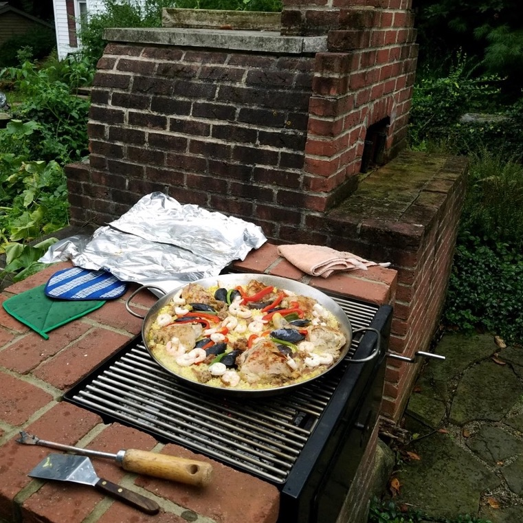
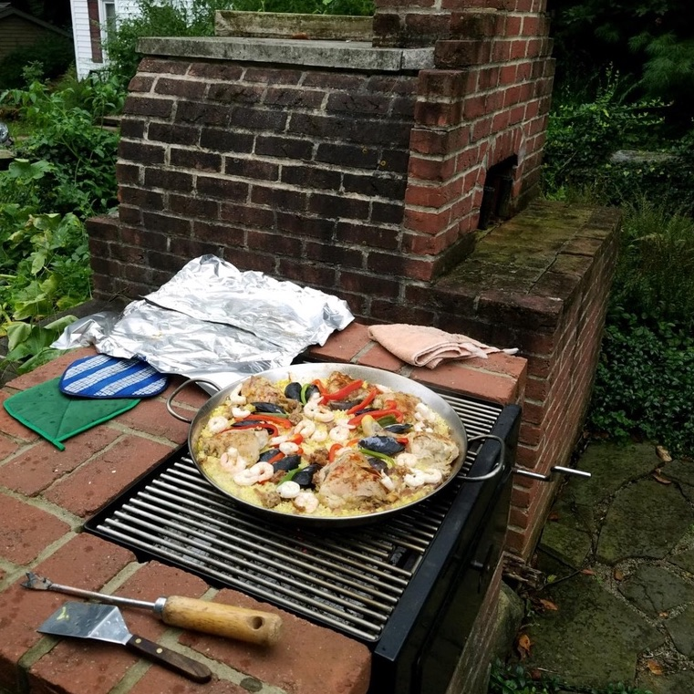

Paella
 

Here are a collection of paellas from various places. Hover over an image to learn more!
Making paella has been a family tradition for a long time. My grandfather was Colombian, and so we keep up his tradition of making paella. Within my family, we enjoy adding chorizo, oysters, chicken, and artichokes. I have adapted this dish with just vegetables using green beans, chickpeas, and peppers.